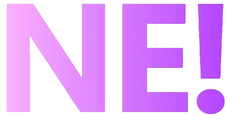
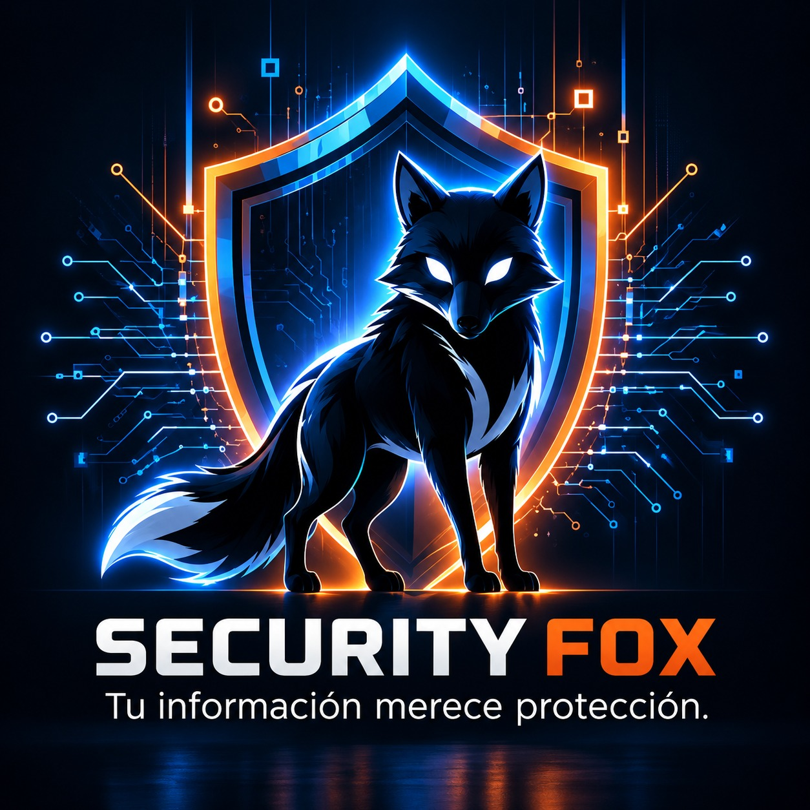
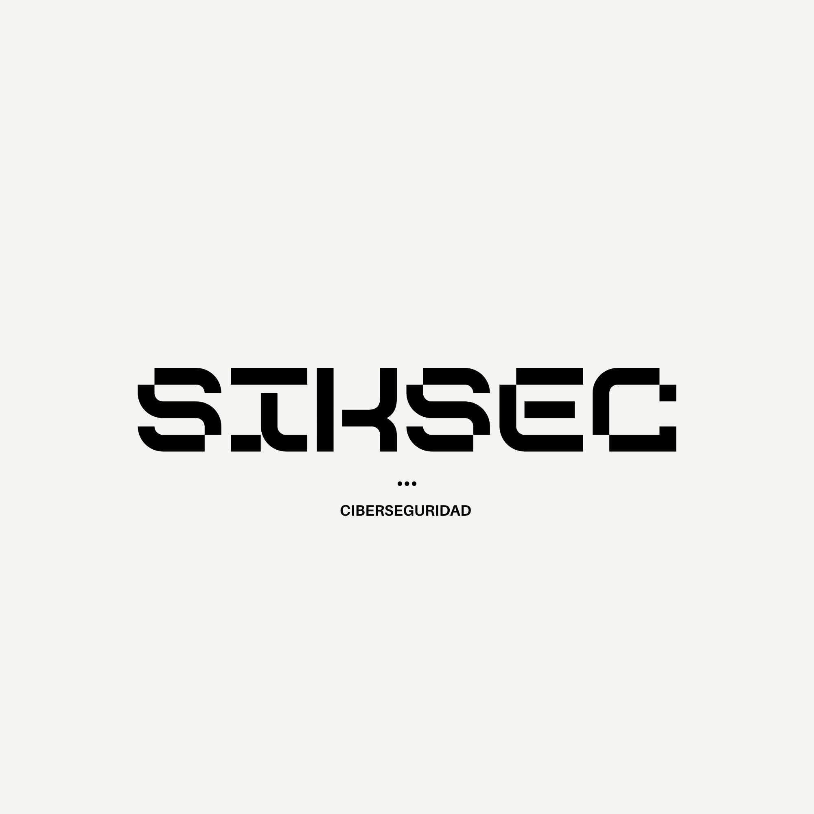
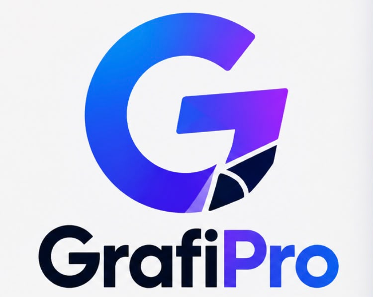
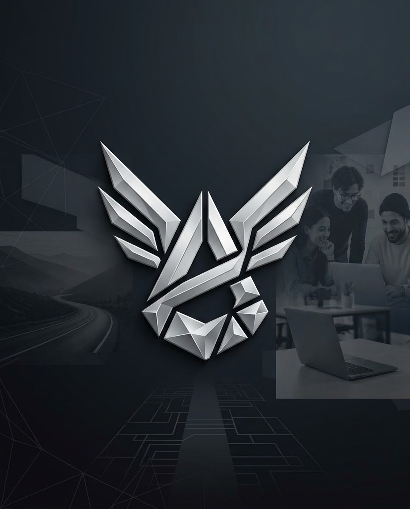
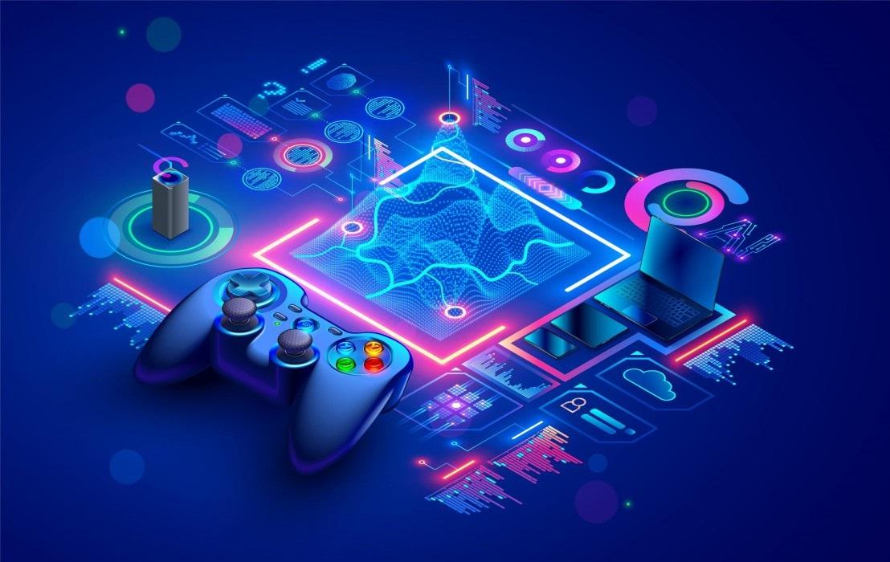
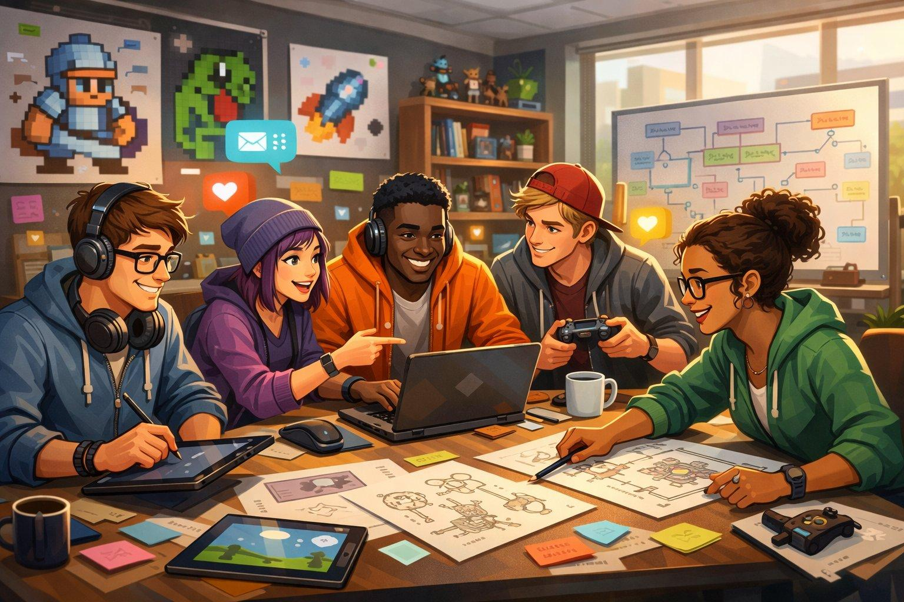
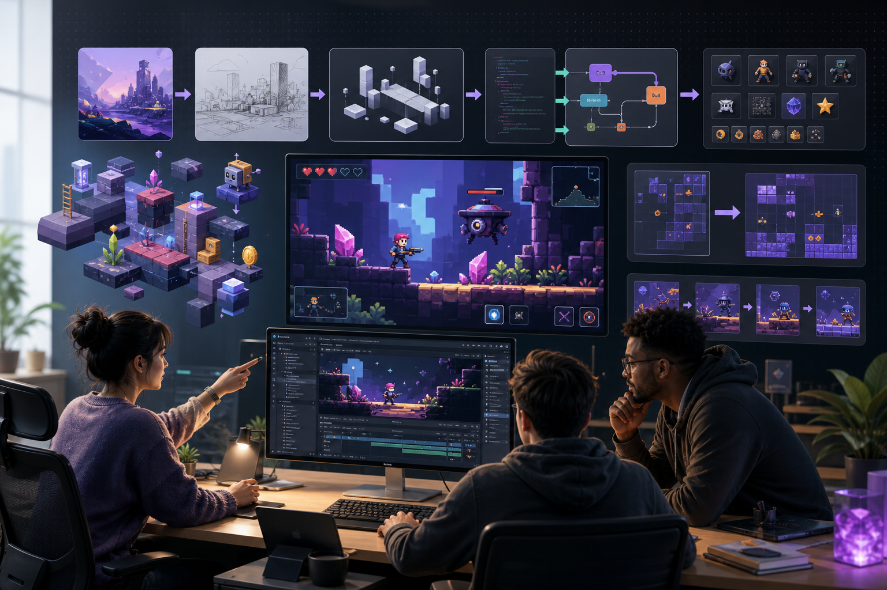
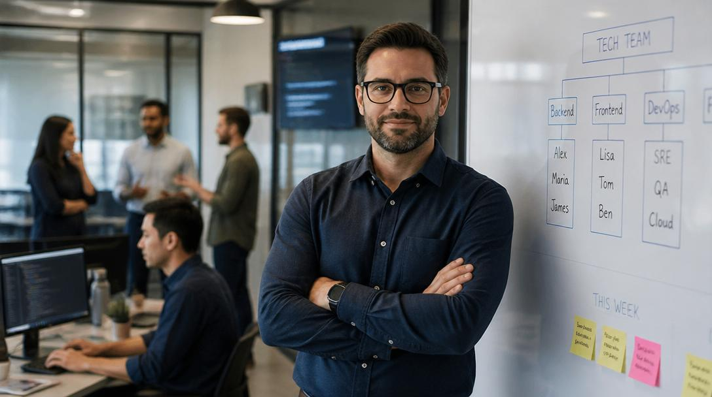
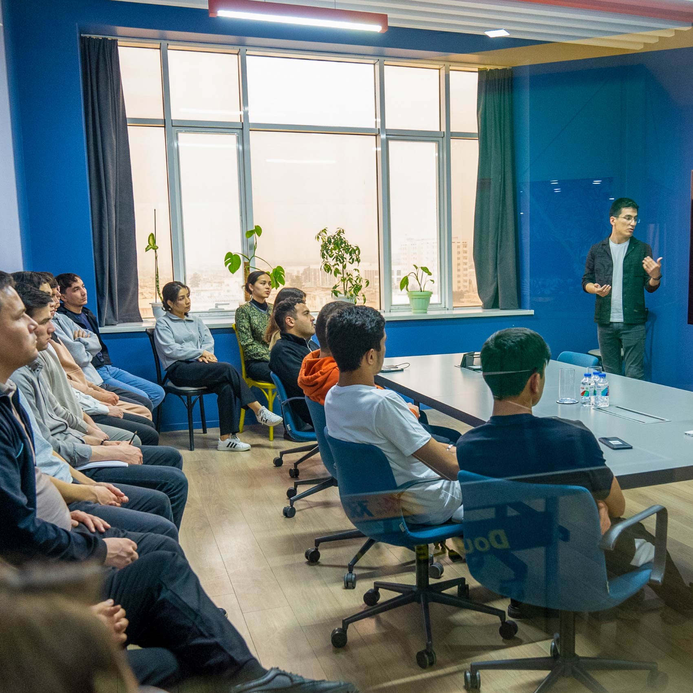

Juego de plataformas
Salta, corre y esquiva obstáculos en un mundo lleno de color y acción. Juego javificado (no jugable por el momento).
Ludmmine diseña, desarrolla y lanza videojuegos por encargo para PC, consolas y dispositivos móviles. Tú imaginas el mundo; nosotros hacemos que cobre vida.
Una muestra de proyectos desarrollados para nuestros clientes, cada uno creado para convertir una idea en una experiencia.
Salta, corre y esquiva obstáculos en un mundo lleno de color y acción. Juego javificado (no jugable por el momento).
Explora mazmorras que cambian en cada partida, solo o con amigos.
Así convertimos el encargo de un cliente en un videojuego terminado.
Defines género, plataforma, público objetivo y fecha de entrega.
Creamos el concepto, el arte, las mecánicas y un prototipo.
Programamos, diseñamos y probamos el videojuego mientras mostramos avances.
Entregamos el juego listo para publicar y ofrecemos soporte posterior.
Unidad I · Organización de la empresa
El trabajo de Ludmmine sigue seis etapas para convertir la solicitud del cliente en un videojuego entregado y con seguimiento.
Recibimos la idea, plataforma, género, público, presupuesto estimado y fecha deseada.
Evaluamos alcance, recursos, riesgos y calendario; presentamos propuesta, precio y condiciones.
Definimos mecánicas, estilo visual, requisitos técnicos, responsables y entregables.
Programamos e integramos arte y sonido; realizamos pruebas de calidad, compatibilidad y seguridad.
El cliente valida el producto, entregamos los archivos acordados y se realiza el cobro conforme al contrato.
Atendemos incidencias pactadas, recopilamos comentarios y documentamos mejoras para futuros proyectos.
La Dirección coordina las cuatro áreas funcionales. En proyectos pequeños, una persona puede cubrir más de una función.
Creamos experiencias para diferentes plataformas y tipos de jugadores.
Conoce a las empresas que colaboran con Ludmmine para crear videojuegos increíbles. Cada una aporta su talento, tecnología y experiencia.

Proyecto enfocado en la inclusión y accesibilidad de personas con discapacidad mediante soluciones relacionadas con sistemas operativos.
Abrir
Empresa enfocada en la creación de software de ciberseguridad para ayudar a proteger sistemas e información.
Abrir
Empresa orientada al desarrollo de software de seguridad para proteger información, fortalecer la confianza y cuidar los datos.
Abrir
Proyecto conceptual de un software destinado a diseñadores gráficos, pensado para apoyar sus procesos creativos.
Abrir
Enfoque en la creación y comercialización de conceptos para videojuegos, incluyendo ideas originales y biblias de juego.
AbrirEn Ludmmine creemos que los mejores videojuegos nacen de la creatividad, la confianza y el trabajo en equipo. Junto con nuestros colaboradores, compartimos principios que guían cada proyecto.
Transformamos ideas originales en experiencias interactivas, explorando nuevas tecnologías y formas de jugar.
Buscamos que cada videojuego tenga una experiencia cuidada, funcional y memorable, prestando atención a cada detalle.
Escuchamos las ideas de nuestros clientes y colaboradores, valorando las habilidades de cada integrante del equipo.
Procuramos diseñar experiencias accesibles para personas con diferentes necesidades y formas de interactuar.
Actuamos con honestidad, respetamos los acuerdos y protegemos la información de nuestros clientes.
Aprendemos de cada proyecto, aceptamos nuevos desafíos y mejoramos constantemente nuestros procesos.
Entorno externo, medio interno, cultura corporativa y globalización
Ludmmine se relaciona con clientes, empresas y emprendedores que solicitan videojuegos, competidores del sector, proveedores tecnológicos, distribuidores como Steam, Xbox y PlayStation, y socios que colaboran en el desarrollo y la publicidad.

Ludmmine está influenciada por los avances tecnológicos, los costos de desarrollo, los gustos de los jugadores, las leyes de derechos de autor y protección de datos, y la competencia entre desarrolladoras.

Ludmmine cuenta con colaboradores, computadoras, herramientas digitales y motores gráficos. La organización y el trabajo en equipo permiten desarrollar videojuegos de calidad y cumplir con las fechas de entrega.

Nuestra cultura se basa en la creatividad, innovación, colaboración, responsabilidad y compromiso. Fomentamos la comunicación, el respeto, el aprendizaje y la participación de cada integrante para crear videojuegos originales.
Internet permite a Ludmmine colaborar con especialistas de otros países y ofrecer servicios internacionales. También facilita el acceso a nuevas tecnologías y mercados, aunque exige competir globalmente y mantener la calidad y la seguridad digital.
Las capacidades de Ludmmine deben aprovechar oportunidades y responder a los retos externos.
| Fortaleza interna | Oportunidad o reto externo | Relación y respuesta |
|---|---|---|
| Equipo creativo y conocimientos de programación. | Crecimiento del mercado de videojuegos y demanda de experiencias personalizadas. | Desarrollar prototipos originales y mostrar portafolio para atraer clientes. |
| Colaboradores especializados en diseño y seguridad digital. | Mayor importancia de la protección de datos y la confianza de los usuarios. | Integrar revisiones de seguridad y accesibilidad desde el diseño. |
| Uso de herramientas digitales y trabajo remoto. | Acceso a clientes y especialistas de otros países. | Coordinar reuniones y entregables digitales, considerando idioma, horarios y contratos. |

La falta de coordinación entre programación, diseño gráfico y ciberseguridad puede generar retrasos y costos adicionales.

Analizamos los riesgos, los costos y las consecuencias de nuestras decisiones.

Aplicamos los siete pasos de toma de decisiones para mejorar la organización del trabajo.
PLANEACIÓN Y TOMA DE DECISIONES
Una solución para mejorar la coordinación del equipo, cumplir las entregas y cuidar el presupuesto sin aumentar costos innecesarios.
La falta de coordinación entre programación, diseño gráfico y ciberseguridad puede retrasar el desarrollo de los videojuegos, provocar errores y afectar tanto la calidad del producto como el presupuesto.
Asignar responsables y fechas límite, definir prioridades, realizar reuniones breves de seguimiento y utilizar una herramienta de gestión para que todas las áreas conozcan el avance y los pendientes.
Con una mejor comunicación podemos detectar riesgos antes, distribuir mejor los recursos, reducir retrabajos y tomar decisiones técnicas y financieras con información más clara.
GUION PARA EXPONER
En Ludmmine identificamos un problema estratégico: la falta de coordinación entre las áreas de programación, diseño gráfico y ciberseguridad. Cuando cada área trabaja sin suficiente comunicación, pueden aparecer retrasos, errores y gastos que afectan la entrega y la calidad de nuestros videojuegos.
Para resolverlo, proponemos organizar las tareas con responsables definidos, fechas límite y prioridades. También realizaremos reuniones breves para revisar avances y utilizaremos una herramienta de gestión que permita consultar el estado de cada tarea. Así podremos detectar problemas a tiempo y coordinar mejor el trabajo.
Esta propuesta relaciona la planeación, la organización interna y la toma de decisiones, porque nos ayuda a elegir qué atender primero y cómo aprovechar los recursos disponibles. Como equipo directivo, debemos considerar tanto la calidad técnica como los costos, sin invertir en recursos adicionales si podemos mejorar primero nuestros procesos.
Nuestro objetivo es que Ludmmine trabaje de manera más coordinada, cumpla sus entregas y desarrolle videojuegos de calidad de forma responsable y sostenible.
ACTIVIDAD · TOMA DE DECISIONES DIRECTIVAS
Aplicamos los siete pasos del proceso de toma de decisiones al retraso en el desarrollo de videojuegos por falta de coordinación entre programación, diseño gráfico y ciberseguridad.
La falta de coordinación entre las áreas provoca retrasos, errores y tareas que deben repetirse durante el desarrollo de los videojuegos.
Consideramos el tiempo de entrega, los costos, la calidad del videojuego y la seguridad digital del proyecto.
Damos mayor importancia al tiempo de entrega y a la calidad. La seguridad es indispensable y también debemos cuidar el presupuesto.
Podemos contratar más colaboradores, reorganizar las tareas o implementar una herramienta de gestión con reuniones breves de seguimiento.
Contratar personal puede elevar los costos. Reorganizar tareas ayuda, pero una herramienta compartida facilita el seguimiento y la comunicación entre las áreas.
Elegimos utilizar una herramienta de gestión, asignar responsables y fechas límite, establecer prioridades y realizar reuniones breves de coordinación.
Registraremos las tareas y sus responsables, revisaremos los avances semanalmente y ajustaremos la organización cuando sea necesario. Evaluaremos si disminuyen los retrasos y los retrabajos sin aumentar gastos innecesarios.
CRITERIOS QUE PESARON MÁS
Los criterios decisivos fueron el tiempo de entrega, la calidad y los costos. La seguridad digital se mantiene como una condición indispensable. Por eso preferimos mejorar primero la organización del trabajo con responsables, fechas y seguimiento, en lugar de contratar personal de inmediato o aumentar el presupuesto.
Resultado esperado: mejorar la coordinación entre las áreas, anticipar problemas y entregar videojuegos de calidad en el plazo previsto, aprovechando mejor los recursos disponibles.
Calificamos cada alternativa de 1 (muy desfavorable) a 5 (muy favorable). Los pesos reflejan la importancia de cada criterio y suman 100%.
| Criterio | Peso | Contratar personal | Reorganizar tareas | Herramienta + seguimiento |
|---|---|---|---|---|
| Tiempo de implementación | 30% | 2 | 4 | 4 |
| Costo | 25% | 1 | 5 | 4 |
| Calidad y coordinación | 25% | 4 | 3 | 5 |
| Seguridad y control | 20% | 3 | 3 | 4 |
| Total ponderado / 5 | 100% | 2.40 | 3.85 | 4.25 |
Unidad IV · Actividad 1
Los cimientos que orientan nuestras decisiones, el desarrollo de videojuegos y el crecimiento de la empresa.
En Ludmmine desarrollamos videojuegos creativos e innovadores que convierten las ideas de nuestros clientes en experiencias interactivas de calidad. Trabajamos mediante la tecnología, el diseño y la programación para ofrecer proyectos que cumplan con las necesidades y expectativas de cada cliente.
Ser una empresa reconocida a nivel nacional e internacional por la creación de videojuegos originales y de calidad, estableciendo alianzas con profesionales, inversionistas y especialistas en tecnología y seguridad digital.
La estrategia de Ludmmine será la diferenciación por diseño y creatividad. Buscamos destacar mediante videojuegos personalizados, estilos visuales originales, mecánicas innovadoras y experiencias adaptadas a cada cliente. También ofreceremos atención personalizada, comunicación constante y cumplimiento de las fechas de entrega.
Unidad IV · Actividad 2
Organizamos las metas de la empresa en tres niveles: estratégico, táctico y operativo.
Consolidar a Ludmmine como una empresa desarrolladora de videojuegos reconocida por su creatividad, calidad e innovación, logrando conseguir clientes, colaboradores e inversionistas durante el próximo año.
Actividades iniciales para avanzar en el producto mínimo viable (MVP).
| Periodo | Actividad | Responsable |
|---|---|---|
| Semana 1 · Días 1 y 2 | Definir las características y mecánicas principales del videojuego. | Dirección y desarrollo |
| Semana 1 · Días 3 y 4 | Diseñar y programar la interfaz y los personajes. | Diseño y programación |
| Semana 1 · Día 5 | Integrar las mecánicas principales del videojuego. | Programación |
| Semana 2 · Días 1 y 2 | Realizar pruebas de funcionamiento y detectar errores. | Desarrollo y pruebas |
| Semana 2 · Días 3 y 4 | Corregir errores y mejorar la experiencia de juego. | Programación y diseño |
| Semana 2 · Día 5 | Presentar una primera versión funcional del MVP. | Todo el equipo |
Calificamos cada actividad del 1 al 5 según su importancia y urgencia. La suma permite identificar qué tarea debe atenderse primero.
| Actividad | Importancia | Urgencia | Total |
|---|---|---|---|
| Definir las mecánicas del videojuego | 5 | 5 | 10 |
| Programar las funciones principales | 5 | 4 | 9 |
| Diseñar la interfaz y los personajes | 4 | 4 | 8 |
| Realizar pruebas de funcionamiento | 5 | 3 | 8 |
| Crear publicaciones para redes sociales | 3 | 2 | 5 |
ANÁLISIS ESTRATÉGICO
Identificamos los factores internos y externos que influyen en nuestro estudio para convertirlos en estrategias de crecimiento.
Aprovechar nuestras fortalezas para crecer.
Usar nuestras capacidades para enfrentar riesgos.
Aprovechar oportunidades para mejorar.
Reducir debilidades y prevenir amenazas.
UNIDAD V · DIRECCIÓN Y TOMA DE DECISIONES
En Ludmmine aplicaré un liderazgo principalmente directivo, con elementos participativos y transformacionales. Mantendré la organización y las responsabilidades claras, pero escucharé a los especialistas y promoveré el crecimiento del equipo.
Justificación para toda la empresa: Ludmmine necesita creatividad, coordinación y cumplimiento de compromisos. Por eso no usaré un liderazgo rígido igual para todos: estableceré objetivos, reglas, prioridades y fechas comunes, pero escucharé a cada área porque sus funciones y conocimientos son distintos. En desarrollo y diseño daré autonomía para proponer soluciones; en ventas y marketing acordaremos metas y estrategias con base en clientes; en soporte priorizaremos la atención y la resolución de solicitudes; y en administración y finanzas mantendremos controles, presupuestos y procedimientos claros. Recursos humanos (cuando se integre al equipo) atenderá capacitación, clima laboral y necesidades del personal. La decisión final será responsabilidad de la dirección.
Liderazgo directivo. Como directora definiré la visión, los objetivos, las prioridades y las decisiones generales de Ludmmine.
Liderazgo participativo. Trabajaré con los responsables de cada departamento para organizar proyectos y convertir los objetivos en planes.
Liderazgo directivo con confianza técnica. Estableceré tareas, fechas y criterios de calidad, respetando la experiencia de quienes desarrollan el juego.
Escenario: el equipo detecta que el MVP no estará listo en la fecha prometida. El retraso afecta programación y diseño, pero también las pruebas, la campaña de marketing, las demostraciones de ventas, el soporte de lanzamiento y el presupuesto administrativo.
Mi decisión: convocaré una reunión extraordinaria con los responsables de todas las áreas. Desarrollo y diseño identificarán qué funciones son indispensables; pruebas evaluará los riesgos y errores; marketing pausará anuncios que prometan funciones todavía no disponibles; ventas informará a los clientes y ajustará las demostraciones; soporte preparará respuestas para dudas; administración y finanzas revisarán el impacto en costos y calendario; y recursos humanos ayudará a detectar sobrecarga y necesidades de apoyo. Con esa información, la dirección aprobará un plan con prioridades, responsables y nuevas fechas.
Aplicación de mi liderazgo: seré directiva al establecer el objetivo y tomar la decisión final, participativa al escuchar a cada departamento y motivadora al reconocer el esfuerzo y distribuir el trabajo de forma realista. Reduciremos o pospondremos funciones secundarias, sin sacrificar la seguridad ni la calidad. Comunicaré al cliente el cambio con transparencia y revisaré el plan semanalmente.
La siguiente herramienta permite convertir las decisiones en acciones concretas y darles seguimiento por área, responsable, fecha y estado.
UNIDAD V · DIRECCIÓN DE EQUIPOS TECNOLÓGICOS
Nuestro equipo es el motor de cada videojuego. Por eso organizamos la motivación, la comunicación, la supervisión y la evaluación con base en las necesidades de las personas y los objetivos de cada proyecto.
Tomamos como referencia las teorías de Maslow y Herzberg para crear un ambiente donde las personas puedan desarrollarse y encontrar razones para crecer dentro de Ludmmine.
Permitir que los programadores propongan soluciones y organicen parte de su trabajo, respetando los objetivos y fechas acordadas.
Asignar proyectos que permitan aprender nuevas herramientas, lenguajes y tecnologías.
Ofrecer horarios flexibles siempre que se cumplan los objetivos y las fechas de entrega.
Destacar el esfuerzo, las ideas y los logros de cada integrante.
Brindar oportunidades para aprender, capacitarse y asumir nuevas responsabilidades.
Fomentar el respeto, la colaboración y la confianza entre todas las áreas.
Consulté las páginas oficiales de Activision Blizzard, Riot Games y Microsoft. No copiaré sus beneficios de forma automática, porque pueden variar según país, puesto y tipo de contrato; tomaré ideas que Ludmmine pueda adaptar a su tamaño y recursos.
| Empresa investigada | Práctica publicada | Adaptación para Ludmmine |
|---|---|---|
| Activision Blizzard · Beneficios | Publica apoyo al bienestar, recursos de salud mental, reembolso educativo para estudios relacionados con el puesto y acceso a pruebas alfa/beta de juegos. | Capacitación relacionada con el trabajo, espacios de bienestar, reconocimiento y participación voluntaria en pruebas de videojuegos. |
| Riot Games · Compensación y beneficios | Describe tiempo libre flexible, descansos colectivos, fondos para bienestar y aprendizaje de juegos. | Flexibilidad por objetivos, pausas planeadas, días de desconexión y presupuesto gradual para aprendizaje y bienestar. |
| Microsoft Careers · Beneficios | Destaca flexibilidad según el puesto, mentoría, aprendizaje continuo, crecimiento y bienestar. | Mentorías internas, cursos por área, reuniones de acompañamiento y acuerdos de trabajo flexibles cuando la operación lo permita. |
Utilizaremos canales definidos para mantener la información organizada y revisar los avances sin saturar al equipo de reuniones.
| Canal | Uso | Frecuencia |
|---|---|---|
| Discord | Comunicación diaria y resolución de dudas. | Diario |
| Trello | Asignación y seguimiento de tareas. | Actualización diaria |
| Google Meet | Reuniones para revisar avances y problemas. | Una vez por semana |
| GitHub | Compartir código y revisar modificaciones. | Al realizar cambios |
| Correo electrónico | Comunicaciones formales con clientes y colaboradores. | Cuando sea necesario |
| Área | Revisión de avances | Qué se revisa |
|---|---|---|
| Desarrollo, diseño y pruebas | Breve actualización diaria; revisión semanal; cierre de sprint quincenal. | Funciones, entregables, errores, bloqueos y calidad del MVP. |
| Ventas y marketing | Revisión semanal y reunión general quincenal. | Contactos, propuestas, conversiones, campañas, comentarios y compromisos con clientes. |
| Soporte y atención al cliente | Revisión diaria de casos; resumen semanal. | Solicitudes recibidas, tiempo de respuesta, casos resueltos y satisfacción. |
| Administración y finanzas | Revisión semanal; corte mensual. | Presupuesto, gastos, pagos, compras y desviaciones de costos. |
| Recursos humanos y dirección | Reunión quincenal general; revisión mensual. | Carga de trabajo, capacitación, clima laboral, metas y riesgos. |
Al comenzar el sprint se definirán los objetivos, las tareas y las personas responsables.
Cada integrante realizará sus actividades y actualizará el estado de sus tareas.
Se revisará el progreso, se identificarán dificultades y se acordará el apoyo necesario.
Al finalizar las dos semanas se presentarán resultados, se probarán las funciones y se definirán mejoras para el siguiente sprint.
La supervisión se basará en resultados, comunicación y confianza. No se vigilará constantemente a los colaboradores; se dará seguimiento para detectar obstáculos y ofrecer apoyo a tiempo.
Revisar Trello para identificar actividades pendientes, detenidas o próximas a vencer.
Consultar los avances y preguntar qué dificultades necesitan resolverse.
Identificar si una tarea depende de otra persona, herramienta o solución técnica.
Facilitar que los integrantes soliciten ayuda y colaboren para resolver problemas.
Cambiar prioridades o distribuir tareas cuando sea necesario.
Señalar oportunidades de mejora sin culpar ni desmotivar al colaborador.
Ejemplo práctico: si el equipo de programación se retrasa en una función importante, la dirección revisará las causas junto con los responsables. Después se reorganizarán las tareas, se ofrecerá apoyo técnico y se establecerá una nueva fecha de revisión. La meta será solucionar el problema sin generar presión innecesaria.
Evaluaremos los resultados del proyecto y el funcionamiento del equipo mediante indicadores claros.
| Indicador | ¿Qué se evaluará? | Frecuencia |
|---|---|---|
| Avance del MVP | Porcentaje de funciones del producto mínimo viable completadas frente al plan. | Semanal · foco rojo menor a 90% |
| Pruebas con usuarios reales | Número de pruebas realizadas para validar el videojuego. | Por sprint · foco rojo menor a 5 |
| Retraso de entregas clave | Días transcurridos después de la fecha programada. | Semanal · foco rojo mayor a 14 días |
| Cumplimiento de tareas | Porcentaje de actividades terminadas a tiempo. | Semanal |
| Calidad del software | Errores detectados durante las pruebas y su nivel de impacto. | Cada sprint |
| Motivación del equipo | Satisfacción y ambiente laboral mediante retroalimentación. | Mensual |
| Conversión comercial | Porcentaje de propuestas aceptadas respecto de las propuestas enviadas. | Semanal · alerta si baja de 15% durante dos revisiones consecutivas (meta inicial a validar). |
| Atención de soporte | Porcentaje de solicitudes respondidas dentro del plazo interno acordado. | Semanal · alerta si baja de 90%. |
| Control presupuestal | Diferencia entre gasto real y presupuesto autorizado del proyecto. | Semanal · alerta si supera 10% sin autorización. |
CONCLUSIÓN
Ludmmine considera que el éxito de una empresa tecnológica no depende únicamente de sus herramientas o de la calidad de sus videojuegos, sino también de las personas que trabajan en ellos. Mediante la motivación, la comunicación organizada y la supervisión constructiva, buscaremos crear un equipo comprometido, creativo y capaz de resolver problemas. Aplicar las teorías de Maslow y Herzberg permitirá comprender mejor las necesidades de los colaboradores y construir un ambiente donde puedan crecer profesionalmente mientras contribuyen al desarrollo de la empresa.
UNIDAD V · ESTÁNDARES DE CONTROL
El estándar principal de Ludmmine será cumplir al menos el 90% de los compromisos semanales o quincenales de cada área, respetando los criterios de calidad, atención y presupuesto correspondientes al puesto. No se medirá a todas las personas con la misma cantidad de tareas: cada departamento tendrá indicadores relacionados con sus responsabilidades.
| Área / puestos | Estándar esperado | Cómo se comprobará |
|---|---|---|
| Dirección y coordinación | 100% de decisiones críticas registradas con responsable, fecha y seguimiento. | Actas breves y tablero de proyectos. |
| Programación y desarrollo | Al menos 90% de tareas comprometidas terminadas en el sprint; código revisado y probado. | Trello y GitHub: tareas completadas, revisiones y pruebas. |
| Diseño y arte | Al menos 90% de entregables aprobados según el brief y la fecha acordada. | Tablero de tareas y lista de criterios visuales. |
| Pruebas y calidad | 100% de funciones esenciales del MVP probadas antes de una entrega; errores críticos atendidos antes de publicar. | Registro de pruebas, errores y correcciones. |
| Ventas y marketing | Al menos 90% de seguimientos comerciales realizados en la fecha prevista; propuestas y campañas con resultados medidos. | Registro de clientes, propuestas, seguimiento y conversiones. |
| Soporte y servicio al cliente | Al menos 90% de solicitudes respondidas dentro del plazo interno; casos documentados hasta su solución. | Registro de tickets, tiempos de respuesta y satisfacción. |
| Administración y finanzas | Registros actualizados semanalmente y desviaciones presupuestales justificadas. | Control de gastos, pagos, facturas y presupuesto. |
| Recursos humanos | Procesos de integración, capacitación y seguimiento del personal realizados según calendario. | Lista de inducción, capacitaciones y encuestas de clima. |
Utilizaré un tablero compartido en Trello y un resumen de indicadores. Cada responsable actualizará únicamente el estado de sus tareas, la fecha, el resultado y, si existe un problema, el motivo y el apoyo que necesita. Una reunión semanal de máximo 30 minutos revisará las excepciones; al terminar cada sprint de dos semanas se evaluará el resultado completo.
Para evitar burocracia, no se pedirán reportes largos ni se medirá el valor de una persona por horas conectada, mensajes enviados o cantidad de líneas de código. Se revisarán resultados, calidad, colaboración y cumplimiento de acuerdos. Las metas se ajustarán según el tamaño y la dificultad de cada proyecto.
| Situación detectada | Acción automática del sistema | Acción del responsable y dirección |
|---|---|---|
| Una tarea no se actualiza durante un día hábil. | Enviar recordatorio privado al responsable. | El colaborador actualiza el estado o explica el bloqueo. |
| Una tarea vence sin entregarse. | Marcarla como vencida y avisar al responsable y líder del área. | Revisar causa, prioridad, carga de trabajo y nueva fecha realista. |
| Un área queda debajo del 90% de cumplimiento. | Activar alerta amarilla y solicitar explicación breve. | Definir apoyo, capacitación, redistribución o ajuste del plan. |
| Retraso mayor a 14 días, falla crítica o riesgo para el cliente. | Activar foco rojo y notificar a dirección. | Reunión extraordinaria, priorizar el objetivo principal y comunicar el plan al cliente si corresponde. |
| Se repite el incumplimiento en dos periodos. | Generar seguimiento prioritario y registrar acuerdos. | Revisar si la meta es realista, si faltan recursos o capacitación y acordar un plan de mejora. |
Regla de justicia: ninguna alerta provocará un castigo automático. Antes de tomar medidas se escuchará a la persona, se comprobará si existió una causa justificada —por ejemplo, una dependencia externa, cambio solicitado por el cliente, ausencia autorizada o falta de recursos— y se acordará una solución. El objetivo del control es corregir el proceso y apoyar al equipo, no vigilar ni sancionar sin investigar.
El tablero actual funciona como prototipo local del navegador. En una versión conectada a una base de datos, se crearán registros de colaboradores, departamentos, tareas, metas, mediciones, alertas y acciones correctivas. Así cada persona verá sus actividades y cada responsable podrá consultar los resultados de su área, con permisos según su puesto.
Registra decisiones, vincúlalas con un KPI, define el umbral que activará una alerta y deja escrita la acción correctiva. La tarea permitirá dar seguimiento a la decisión directiva.
No hay tareas registradas.
UNIDAD VI · ADMINISTRACIÓN DE PROYECTOS
Además de desarrollar videojuegos, Ludmmine debe cuidar sus recursos, comprobar la satisfacción de sus clientes y revisar si sus decisiones administrativas están dando resultados.
El control es un proceso de retroalimentación que permite comprobar si los recursos financieros, técnicos y humanos se utilizan correctamente para cumplir los objetivos de la empresa. No consiste únicamente en vigilar, sino en detectar desviaciones y corregirlas a tiempo.
Se apoya en datos y cantidades para conocer el desempeño.
Evalúa aspectos que no se explican únicamente con números.
Permite validar ideas con usuarios reales, evitar gastos en funciones innecesarias y aprender del mercado para mejorar el producto con evidencia, no solo con suposiciones.
Para iniciar y mantener sus proyectos, Ludmmine separará los costos que se mantienen cada mes de aquellos que aumentan según el número de videojuegos o contratos atendidos.
| Tipo | Concepto | Estimación mensual | Justificación |
|---|---|---|---|
| Fijo | Hosting, dominio y almacenamiento | $1,500 MXN | Servicios digitales necesarios para la operación y la página web. |
| Fijo | Licencias y herramientas de trabajo | $2,500 MXN | Software de diseño, programación y organización. |
| Fijo | Sueldos base y administración | $18,000 MXN | Estimación inicial para mantener la operación del equipo. |
| Fijo | Servicios y gastos administrativos | $2,000 MXN | Internet, electricidad y otros gastos básicos. |
| Variable | Recursos adicionales por proyecto | $4,000 MXN por contrato | Recursos externos, pruebas, contenido o servicios que dependen del proyecto. |
| Variable | Comisiones y soporte adicional | $2,000 MXN por contrato | Pagos de plataformas y apoyo extra cuando se requiere. |
El punto de equilibrio indica cuántos contratos necesita vender Ludmmine para que sus ingresos cubran sus costos, sin generar pérdida ni ganancia. La fórmula es: costos fijos ÷ (precio de venta − costo variable unitario).
Con 2 contratos, Ludmmine alcanza el punto de equilibrio.
Cada mes, Administración y Finanzas compararán lo planeado con lo que realmente se gastó. El tablero muestra una señal para detectar desviaciones.
Aún no hay movimientos registrados.
| Semáforo | Criterio | Acción |
|---|---|---|
| Verde | Gasto igual o menor al presupuesto. | Mantener el seguimiento habitual. |
| Amarillo | El gasto supera el presupuesto hasta en 10%. | Identificar la causa y proponer ajustes para el siguiente periodo. |
| Rojo | El gasto supera el presupuesto en más de 10%. | Detener gastos no esenciales, informar a Dirección y aprobar una acción correctiva. |
Regla de control: Finanzas revisará el flujo de caja cada quince días y realizará un cierre mensual. Todo gasto imprevisto deberá quedar registrado con fecha, motivo, responsable e impacto en el presupuesto.
La auditoría administrativa revisa de forma ordenada cómo funcionaron la planeación, la organización, la dirección y el control. También considera el clima laboral y la experiencia de los usuarios.
Después de probar el videojuego, se pedirá a los usuarios calificar del 1 al 5:
Se agregará una pregunta abierta: ¿qué mejorarías primero?
Mensualmente, el equipo podrá compartir de manera confidencial si la carga de trabajo es adecuada, si recibe apoyo, si la comunicación es clara y qué necesita para realizar mejor sus actividades.
Los resultados del control servirán como aprendizaje para la siguiente planeación. Si una meta no se cumple, se revisarán las causas y se ajustarán recursos, tiempos o responsabilidades.
DIAGNÓSTICO FINAL · LUDMMINE
Durante el desarrollo de Ludmmine comprendí que crear una empresa de videojuegos no consiste solamente en tener buenas ideas o saber programar. También es necesario planear, organizar al equipo, tomar decisiones, administrar el dinero y comprobar los resultados. Aprendí que cada área aporta al proyecto y que una comunicación clara ayuda a evitar retrasos y confusiones. El control financiero permite reconocer si los recursos alcanzan, mientras que la opinión de los usuarios y del equipo ayuda a mejorar la calidad del trabajo. Como fundador, debo estar dispuesto a corregir mis decisiones, escuchar a los demás y utilizar cada resultado como aprendizaje para el siguiente proyecto.
ORGANIZACIÓN INTERNA
Coordinamos las áreas de Ludmmine para reducir retrasos, distribuir responsabilidades y anticipar riesgos.
UNIDAD V · CONTROL Y EVALUACIÓN DIRECTIVA
Se activa cuando el avance registrado sea menor al 90% de lo planeado en la revisión semanal. Dirección revisará las tareas bloqueadas, priorizará el núcleo funcional (Core) y pospondrá funciones secundarias si amenazan la entrega.
Se activa cuando se realicen menos de 5 pruebas con usuarios reales al cierre del sprint. Se coordinará una nueva ronda de pruebas, se contactará a participantes y se corregirán primero los problemas que afecten la experiencia principal.
Se activa si una entrega clave acumula más de 14 días de retraso. Dirección revisará el alcance, reasignará recursos y negociará una fecha realista con el cliente.
Todavía no hay mediciones.
Cuéntanos qué tienes en mente. Nuestro equipo puede convertir esa idea en una experiencia jugable.